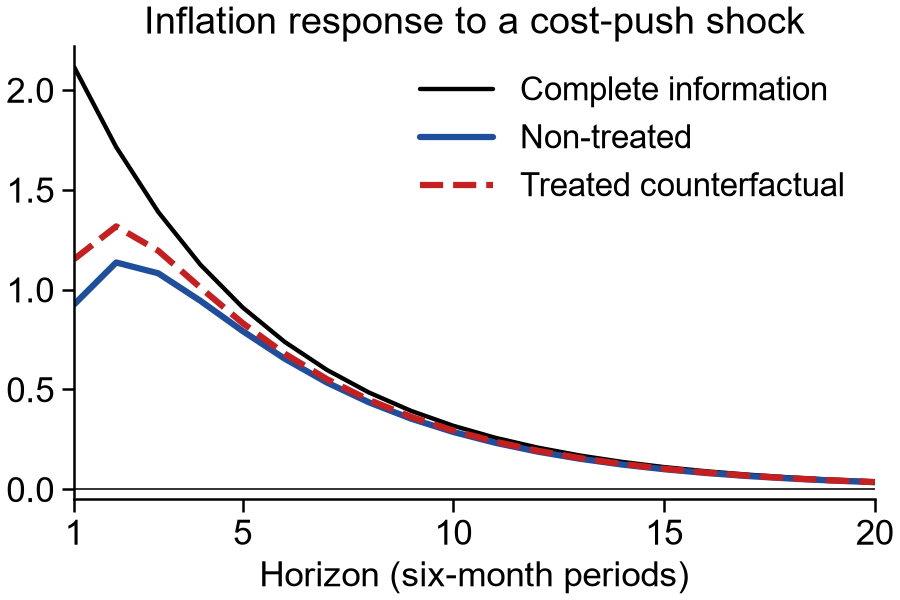

Research
Working Papers
Using a long-running randomized treatment in a survey of Italian firms, we ask whether sustained access to recent inflation data changes how managers update forecasts in response to news. The treatment attenuates deviations from full-information rational expectations (FIRE): relative to non-treated managers, treated managers' consensus forecasts underreact less and individual forecasts overreact less. Among competing models, noisy information with overconfidence in private information fits the evidence best. A common signal with the experiment's precision moves the incomplete-information Phillips curve a quarter of the way toward its FIRE counterpart and raises inflation's impact response to cost-push shocks by about 25 percent.

How do lived housing-market experiences shape the decision to become a homeowner? We develop a dynamic life-cycle model in which households form beliefs about both the mean and variance of future housing returns through experience-based learning, and derive predictions: higher experienced returns encourage ownership while higher experienced volatility discourages it, with both effects attenuating over the life cycle. We test these predictions using the University of California Consumer Credit Panel, which tracks individual residence at the zip-code level and allows us to construct person-specific histories of local nominal house-price returns and volatility since age 18. A 1 percentage point increase in experienced returns raises the quarterly homeownership transition probability by 7% relative to the sample mean; a 1 p.p. increase in experienced volatility lowers it by 10%. Effects are robust to extensive controls and fixed effects, attenuate with age as the model predicts, and also predict leverage at mortgage origination.